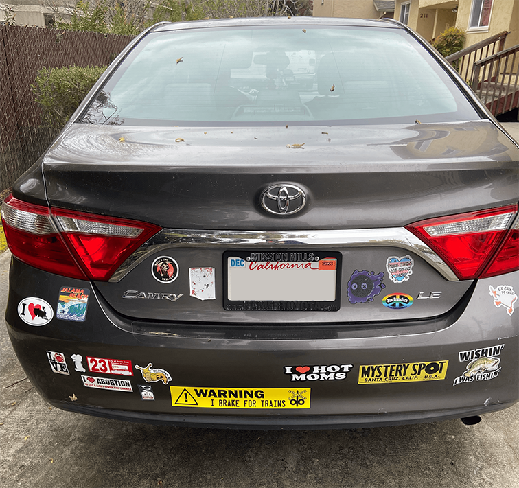

Lab 6 - Objects and Arrays
Challenge
The challenge in this one was to begin learning how to use javascript arrays and objects while working with a partner.
Problems
I dont believe I had any problems this time around! Well. I did have a minor one, but it turned out I just had failed to add a "()" after the function call.
Reflection
I had a good time doing this one!
For the most part my partner and I just hung out and did the work together, we didnt have much to have to consult each other on.
Results
Script Output
